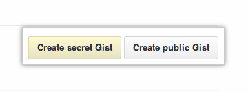

You can create two kinds of gists: public and private. Create a public gist if you're ready to share your code with the world or a secret gist if you're not. In addition to code and text, gists support task lists and GeoJSON.
Editing gists
Gist, like GitHub, is powered by the Ace editor, which supports syntax highlighting, indentation awareness, multiple cursors, and many more features. You can also drag and drop a file of code from your desktop directly into the gist editor.
Creating a gist while signed in to GitHub
If you are signed in to GitHub when you create a gist, the gist will be associated with your account and you will see it in your list of gists when you navigate to your gist home page.
- Sign in to GitHub.
- Navigate to https://gist.github.com.
Type an optional description and name for your gist.
Type the text of your gist into the gist text box.
Do one of the following:
- To create a public, searchable gist, click Create public gist.
- To create a secret gist that is not searchable by other users, click Create secret Gist. 
Creating an anonymous gist
If you are not signed in to GitHub, you will create an anonymous gist. Use anonymous gists if you're unable to log into your GitHub account, or if you haven't signed up for an account yet.
Warning: Anonymous gists cannot be deleted from the web. To have an anonymous gist deleted on GitHub.com or GitHub Enterprise, contact GitHub support or your site administrator, respectively. Please provide the URL of the gist you wish to delete.
Maps in gists with GeoJSON
Gist supports mapping GeoJSON files. These maps are also displayed in embedded gists, so you can easily share and embed maps!